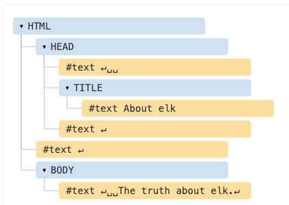
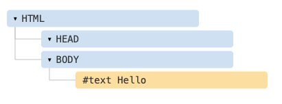

L’épine dorsale d’un document HTML est constituée de balises.
Selon le modèle d’objets de document (DOM), chaque balise HTML est un objet. Les balises imbriquées sont des “enfants” de celle qui les entoure. Le texte à l’intérieur d’une balise est également un objet.
Tous ces objets sont accessibles via JavaScript, et nous pouvons les utiliser pour modifier la page. Par exemple, document.body est l’objet représentant la balise
. L’exécution de ce code rendra le<body> rouge pendant 3 secondes :
Ici, nous avons utilisé style.backgroundColor pour changer la couleur d’arrière-plan de document.body, mais il existe de nombreuses autres propriétés, telles que :
Bientôt, nous apprendrons plus de façons de manipuler le DOM, mais nous devons d’abord connaître sa structure.
Commençons par le simple document suivant :
Le DOM représente le HTML comme une structure arborescente de balises. Voici à quoi ça ressemble : 
Les outils de navigation (qui seront bientôt traités) qui fonctionnent avec le DOM n’affichent généralement pas d’espaces au début/fin du texte et des nœuds texte vides (sauts de ligne) entre les balises.
Les outils de développement permettent d’économiser de l’espace d’écran de cette façon.
Sur d’autres images DOM, je les ometterai parfois lorsqu’elles ne sont pas pertinentes. Ces espaces n’affectent généralement pas la façon dont le document est affiché.
Si le navigateur rencontre du HTML mal formé, il le corrige automatiquement lors de la création du DOM. Par exemple, la balise la plus haute est toujours <html>. Même si elle n’existe pas dans le document, elle existera dans le DOM, car le navigateur la créera. Il en va de même pour <body>.
Par exemple, si le fichier HTML est le seul mot "Hello", le navigateur l’enroulera dans <html> et <body>, et ajoutera le <head> requis, et le DOM sera : 
Lors de la génération du DOM, les navigateurs traitent automatiquement les erreurs dans le document, ferment les balises, etc.
Un document avec des balises non fermées :
… deviendra un DOM normal à mesure que le navigateur lit les balises et restaure les parties manquantes.
Un “cas spécial” intéressant est celui des tableaux. Selon la spécification DOM, ils doivent avoir un <tbody>, mais le texte HTML peut (officiellement) l’omettre. Ensuite, le navigateur crée automatiquement le <tbody> dans le DOM.
Il existe d’autres types de nœuds en plus des éléments et des nœuds de texte.
Par exemple, les commentaires :
Dans l’arbre du DOM un nœud de type commentaire sera étiqueté comme #comment.
Pourquoi un commentaire est-il ajouté au DOM? Cela n’affecte en rien la représentation visuelle. Mais il y a une règle, si quelque chose est en HTML, alors il doit aussi être dans l’arborescence DOM.
Même la directive au tout début du html est également un noeud du DOM. C’est dans l’arborescence du DOM juste avant <html>.
L’objet document qui représente l’ensemble du document est également, formellement, un nœud DOM.
Il existe 12 types de nœuds. En pratique, nous travaillons généralement avec 4 d’entre eux :
Pour voir la structure dom en temps réel, essayez le live DOM viewer. Tapez simplement le document, et il apparaîtra comme un DOM en un instant.
Une autre façon d’explorer le DOM est d’utiliser les outils de développement du navigateur. en fait, c’est ce que nous utilisons lors du développement.
Pour ce faire, ouvrez la page web sample-dom.html, activez les outils de développement du navigateur et passez à l’onglet éléments.
Vous verrez le DOM de la page.
Vous pouvez voir le dom, cliquer sur les éléments, voir leurs détails et ainsi de suite.
Veuillez noter que la structure du dom dans les outils de développement est simplifiée. Les nœuds texte sont affichés comme du texte. Et il n’y a aucun nœud texte “vide” (espace uniquement). C’est très bien, car la plupart du temps nous nous intéressons aux nœuds éléments.
En cliquant sur le bouton dans le coin supérieur gauche cela nous permet de choisir un nœud à partir de la page Web à l’aide d’une souris (ou d’autres périphériques de pointeur) et de “l’inspecter” (faites défiler jusqu’à l’onglet Éléments). cela fonctionne très bien lorsque
nous avons une énorme page html (et un énorme dom correspondant) et que nous aimerions voir la place d’un élément particulier.
Une autre façon de le faire serait simplement de cliquer avec le bouton droit sur une page Web et de sélectionner “inspecter” dans le menu contextuel.
Dans la partie droite des outils se trouvent les sous-onglets suivants (varie selon le navigateur) :
La meilleure façon de les étudier est de cliquer dessus. La plupart des valeurs sont modifiables sur place.
Comme nous travaillons le DOM, nous pouvons également vouloir lui appliquer du JavaScript. Comme : obtenir un nœud et exécuter du code pour le modifier, pour voir le résultat. Voici quelques conseils pour voyager entre l’onglet Elements et la console.
Pour commencer :
C’est à des fins de débogage bien sûr. À partir du chapitre suivant, nous accéderons et modifierons le DOM en utilisant JavaScript.
Les outils de développement du navigateur sont d’une grande aide au développement : nous pouvons explorer le DOM, essayer des choses et voir ce qui ne va pas.